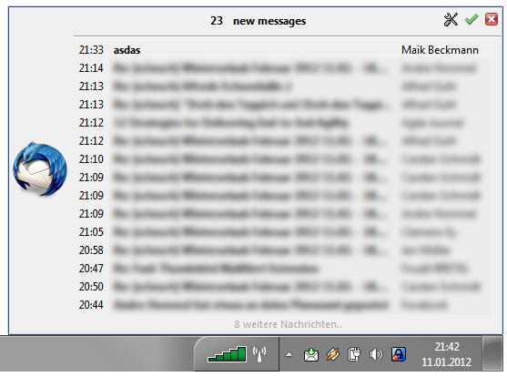
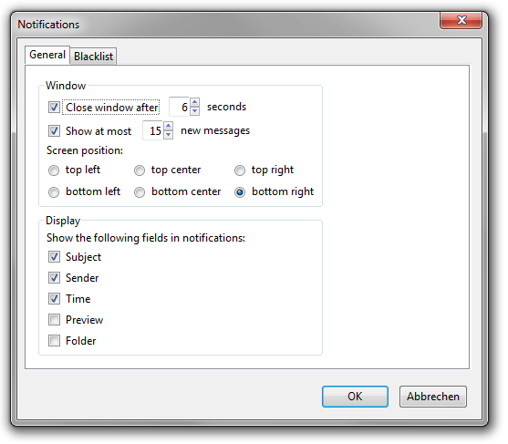
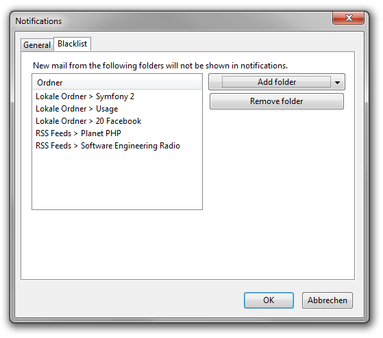

This extension provides a new notification system for the Mozilla Thunderbird e-mail client.
Please note that this is still in beta state. I'm using this since half a year for personal use.
Nevertheless i would be glad to here from you if you actually tested it on your platform. If you have a question to one of the following points you can drop me a mail at mailalert at eigenco de.
DownloadThe notification window is shown every time a new mail arrives. New mails are kept in the notification window until they get acknowledged (or Thunderbird is restarted).
There are three buttons on the top right of the window:
Acknowledging new mails removes the indicator from the system tray and clears the list of mails shown in the notification window. It also marks all new mails as not new but unread (as in new vs. unread)
You can find the settings on the top right of each notification window and in the main menu under "Tools > Add-ons > Extensions > MailAlert > Settings"
 I tried my best to offer a english locale (en_US) for the settings dialog ;) There might be strings out there that are not localized at the moment.
The extension includes a binary XPCOM component (NotificationIconService.dll) to integrate to notification icon into the windows taskbar. Thus the extension only works on windows systems. It was compiled using Visual Studio C++ 2010 Express on a Windows 7.
The standard notification system does not provide a blacklist for mail folders. Thus many mails from low priority folders are shown what makes it harder to actually spot important mails.
It is not possible to configure how much new messages should be shown. At most five messages are shown at each time. Thus if you received more than five mails since last watching mails, you won't see all of them in the notification window.
Messages in the standard notification window are not shown in cronological order. If i understood the implementation correct, it just shows mails from one single folder that has new mail (more or less randomly).
{kind=link}